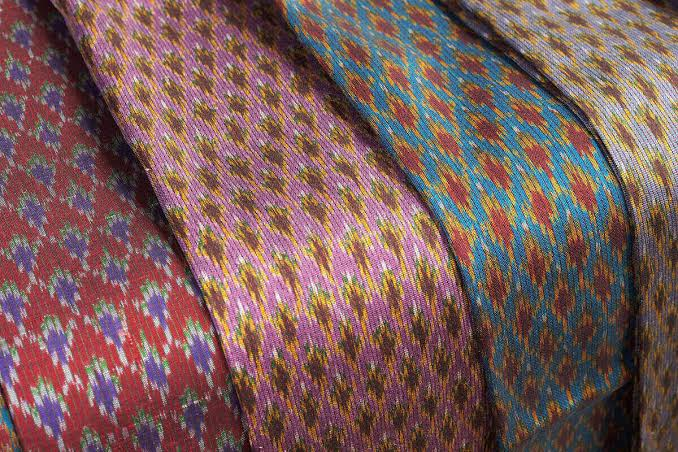
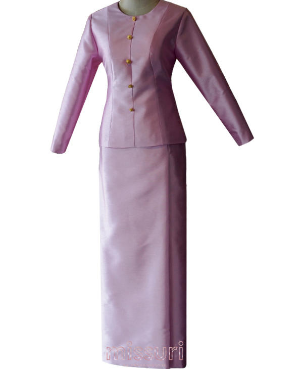
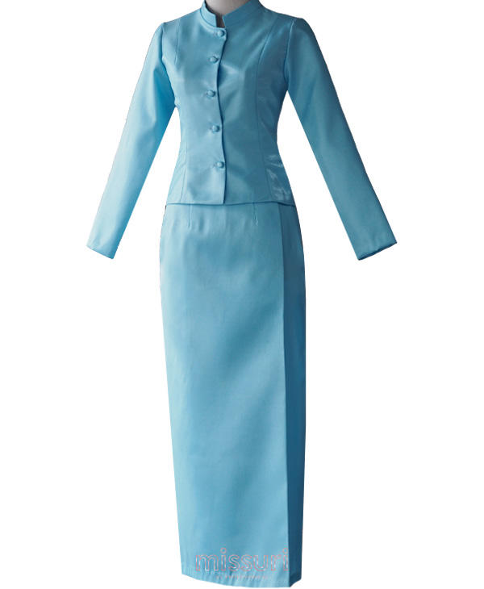
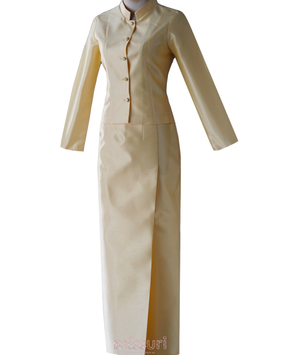
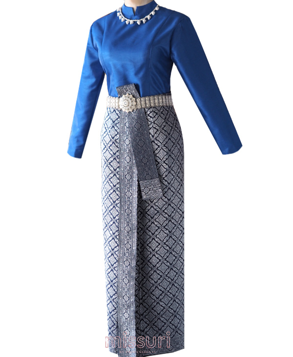
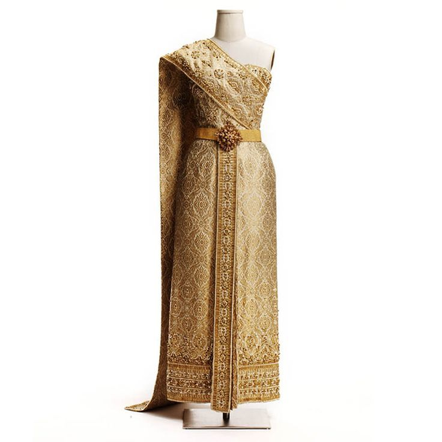
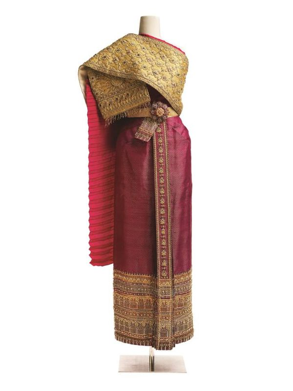
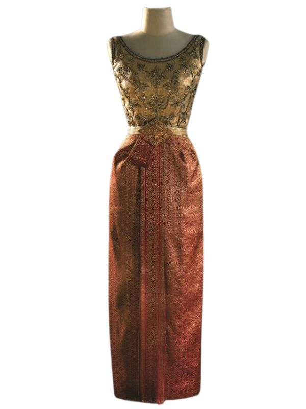
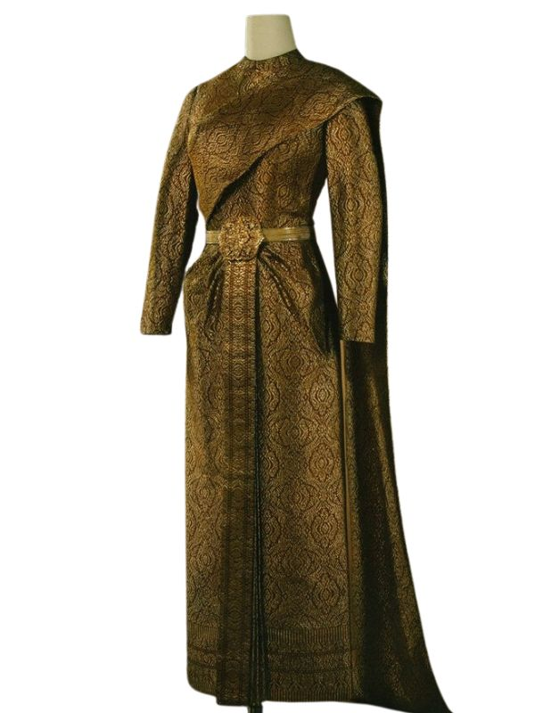
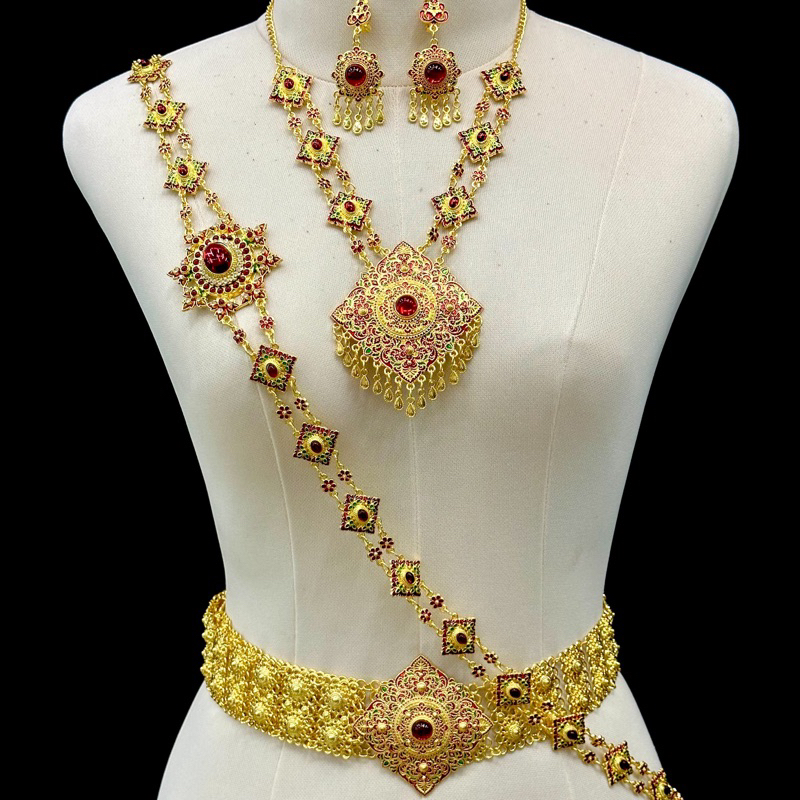

THE STORY OF THAI COSTUME
ชุดไทยพระราชนิยม 8 แบบ เป็นมรดกแห่งพระอัจฉริยภาพของสมเด็จพระนางเจ้าสิริกิติ์ พระบรมราชินีนาถ พระบรมราชชนนีพันปีหลวง ซึ่งทรงริเริ่มให้ชุดไทยมีที่ยืนในโอกาสสำคัญ ตั้งแต่ชุดลำลองไปจนถึงชุดเต็มยศ
แต่ละแบบมีรายละเอียดต่างกัน ทั้งทรงเสื้อ ผ้านุ่ง ผ้าห่ม และเครื่องประดับ เพื่อให้เหมาะกับเวลาและโอกาสของงาน

1. ชุดไทยเรือนต้นลำลอง

2. ชุดไทยจิตรลดาพิธีกลางวัน

3. ชุดไทยอมรินทร์พิธีค่ำ

4. ชุดไทยบรมพิมานพิธีค่ำ · เต็มยศ

5. ชุดไทยจักรีพิธีค่ำ

6. ชุดไทยจักรพรรดิเต็มยศ

7. ชุดไทยดุสิตพิธีค่ำ · เต็มยศ

8. ชุดไทยศิวาลัยเต็มยศ
ผ้าไหมและผ้ายกคือหัวใจของชุดพิธี ผ้ายกทองแกมหรือยกทองทั้งตัวใช้กับชุดตอนค่ำ ส่วนผ้าไหมเกลี้ยงมีเชิงให้ความเรียบสง่าสำหรับโอกาสกลางวัน

เข็มขัดไทย ไข่มุก ลูกปัด และเลื่อม ช่วยเติมรายละเอียดให้ชุด ชุดไทยจักรีเปิดพื้นที่ให้เครื่องประดับได้เต็มที่ในงานตอนค่ำ
ข้อมูลลักษณะและโอกาสการสวมใส่อ้างอิงจากรายงานของ PPTV HD 36